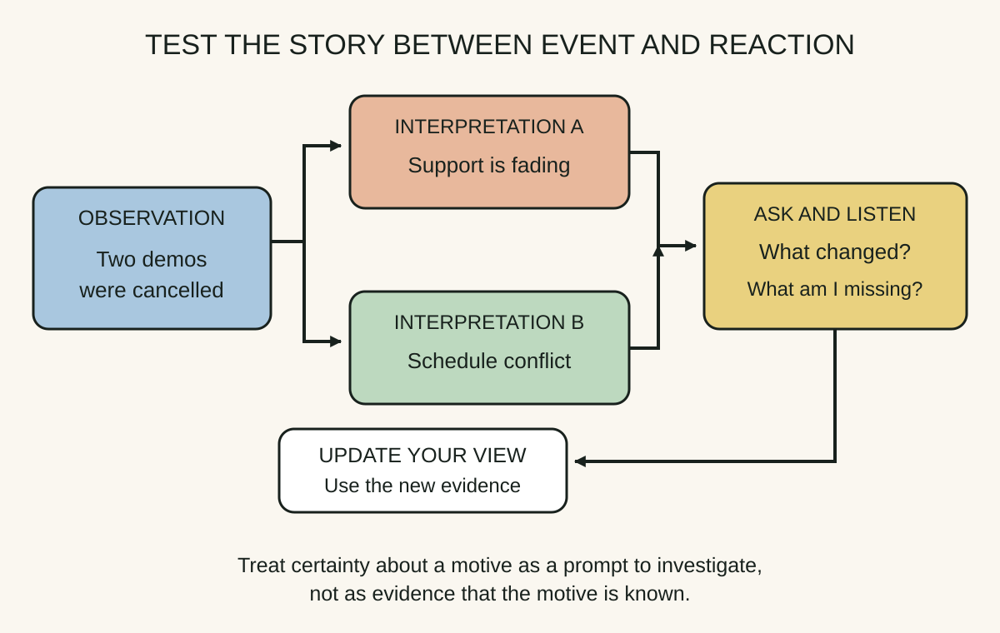
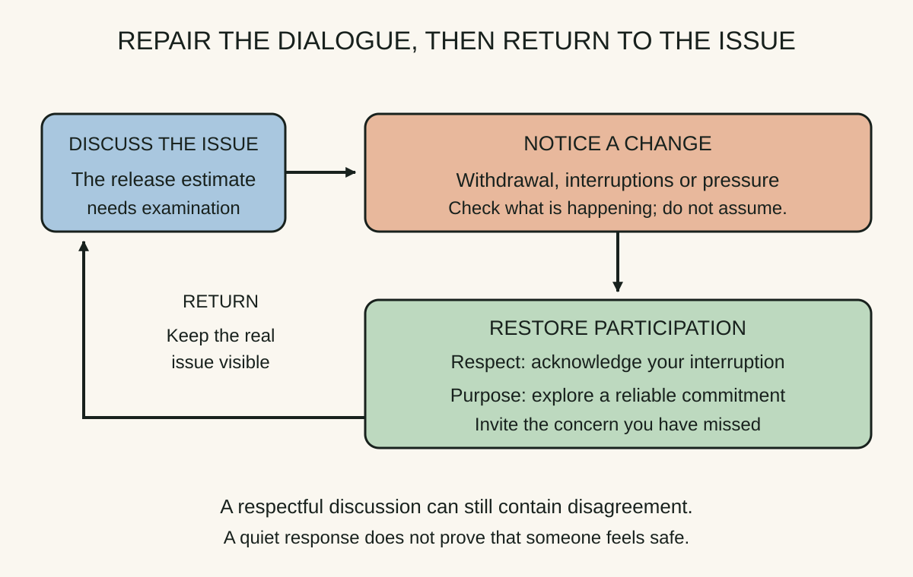
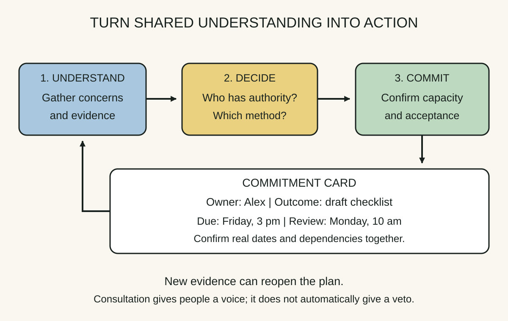

Daily lesson ·
Crucial Conversations
A crucial conversation combines meaningful consequences, different views and strong emotions. Make your reasoning open to correction, keep honest disagreement possible, and finish with commitments people understand.
Idea 1
Make your interpretation testable #
The idea
The authors distinguish what you observed from the meaning you added. Their Master My Stories skill asks you to examine that interpretation before acting on the emotion it generates. A plausible account of someone's motives is still an account, even when your frustration is justified.
STATE My Path gives this reasoning a structure: S, share your facts; T, tell your story; A, ask for others' paths; T, talk tentatively; E, encourage testing. Start with observations, explain your interpretation, then invite the other person's account. Tentativeness and openness apply throughout: you can state verified facts firmly while holding your explanation of motives provisionally.

Why it matters
A disputed motive sends the discussion into a defence of character. An observable event and a revisable interpretation give both people something specific to check.
Apply it today
Replace "You keep undermining delivery" with: "The acceptance criteria changed after sign-off on two releases. I am concerned our approval process is unclear. What changed from your perspective?"
After asking, pause and listen. Summarise what you heard and check it before replying: "You are saying a new safety requirement changed the criteria. Have I understood?" Then examine that information and revise your explanation if it warrants a change.
Caveat or failure mode
Alternative explanations are hypotheses, not excuses or a requirement to assume good intent. Keep evidence of harmful conduct visible. The model is a practical prompt for reflection, not a complete scientific account of emotion.
Idea 2
Restore safety without dropping the issue #
The idea
The authors treat mutual purpose and mutual respect as conditions that help people remain in dialogue. Under pressure, watch for withdrawal or attempts to overpower the conversation. When those appear, pause the disputed content and address what the interaction now seems to mean to the other person.
Repair depends on what went wrong. Apologise when your conduct caused harm. If your purpose has been misunderstood, use contrasting: clarify the intention you do not hold and the constructive purpose you do hold. Then return to the concern. A statement of good intent cannot replace an apology for something you actually did.

Why it matters
If someone expects humiliation or a predetermined verdict, asking for their opinion may produce little useful information. Repairing the interaction gives them a reason to contribute the concerns you need to hear.
Apply it today
If you interrupted a colleague, say: "I cut you off. I am sorry. Please finish your concern before I respond." If the concern is misunderstood as a personal attack, clarify: "I am not questioning your competence. I want us to understand the estimate so we can make a reliable commitment." Use only words you can honestly stand behind.
Ask whether a reliable customer commitment is an outcome you both want. If it is, explore the disputed estimate against that shared purpose. If it is not, first ask which outcome matters to the other person; do not declare agreement on their behalf.
Caveat or failure mode
Good intent alone cannot remove a power imbalance or a credible threat of retaliation. A calm response is not proof of consent or safety. Where direct discussion is unsafe, use a supported or formal channel rather than insisting on private dialogue.
Idea 3
Separate dialogue, decision and commitment #
The idea
Dialogue gathers shared understanding; a decision method determines how a choice is made. The authors distinguish command (the decision maker chooses without seeking input), consult (input informs a decision owned by one or more people), vote (the majority decides), and consensus (everyone agrees to support the choice). Make the method explicit before people mistake consultation for a promise of veto power.
Move to Action closes the gap between a good discussion and a usable commitment. Specify an owner, an observable outcome, a deadline and a follow-up arrangement. These details make misunderstandings visible while people can still correct them.

Why it matters
Two people can leave the same meeting with different assumptions about whether a proposal was approved, who will act, or when it matters. A brief readback exposes those differences before they become missed expectations.
Apply it today
Before a meeting, say whether you are seeking advice for a decision you own or asking the group to reach consensus. Invite challenges to that arrangement early.
Replace "We will improve release communication" with an accepted commitment: "Alex drafts a one-page release checklist by 3 pm Friday; Priya reviews it at 10 am Monday." Confirm the people, dates and capacity in the real conversation.
Caveat or failure mode
A precise instruction is not automatically an accepted or feasible commitment. Check authority, resources and dependencies. Follow-up should allow renegotiation when evidence changes, rather than punish people for surfacing a problem early.
Knowledge check · 6 questions
Learning check
Answer all 6, then check your answers. Your first result stays in this browser, and each explanation appears after you check. A 3-question review can appear on the homepage from tomorrow.
6 questions not yet answered.
Today's experiment · 10 minutes
Prepare one conversation you have been avoiding
- Minutes 0 to 2: choose a manageable unresolved issue. Write the outcome you want for yourself, the other person and the working relationship.
- Minutes 2 to 4: record two observations separately from your interpretation. Add one plausible alternative explanation and a question that would distinguish them.
- Minutes 4 to 6: draft an opening with an observation, a tentative interpretation and a genuine question. Read it aloud once. Remove any phrase that assumes you already know the other person's motive.
- Minutes 6 to 8: identify a possible shared outcome and how you will check it. Prepare an apology if you caused harm, or an honest clarification if your purpose could be misunderstood.
- Minutes 8 to 10: write how the decision should be made and a blank commitment card for owner, outcome, deadline and follow-up. Use the conversation to agree the details.
Observable result: A short preparation note with checkable observations, a revisable interpretation, a respectful opening and a route from discussion to an accepted next step. The exercise prepares the conversation; it does not claim to resolve it.
Retrieval practice
Spaced recall
- From The Scout Mindset: what evidence would change your explanation of the other person's behaviour?
- From Thanks for the Feedback: how might a relationship trigger distract you from useful information in a difficult message?
- From The First 90 Days: what would a learning agenda reveal before you make a commitment with a new stakeholder?
Verification
Source notes
These links support the attributed claims and edition details; applications and extensions are labelled in the lesson.
- Crucial Learning: third edition authors, publication date and changes
- Crucial Learning: Master My Stories and the distinction between events and interpretations
- Crucial Learning glossary: STATE My Path, decision methods and Move to Action
- Crucial Learning: Make It Safe, mutual purpose and mutual respect
- Al Switzler: Improve Results by Moving to Action, ownership and follow-up
- Ron McMillan: Seeking Accountability, observations before conclusions
One-sentence takeaway